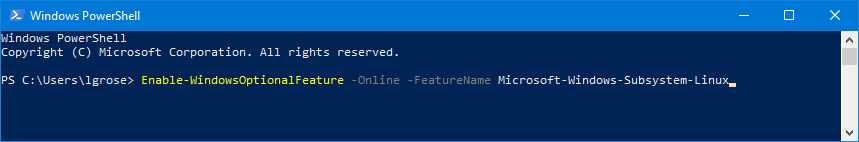

Installation¶
LoopStructural is supported and tested on Python 3.6+ and can be installed on Linux, Windows and Mac. There are three ways of installing LoopStructural onto your system:
Using docker (best approach for remote services such as AWS)
Using precompiled binary files for your relevant distribution
Compiling LoopStructural from source
Docker¶
Installing Docker
Follow the installation instructions for docker here.
Building and running a docker image
Using a github client (e.g. for windows Github Desktop)
Clone this repository to your local drive and change
directory to the location where you cloned it using
cd ${LOOPSTRUCTURAL_FOLDER}. The docker
container can be built by running the following command
.. code-block::console
docker build -t=loop .
LoopStructural can be used by running
This will start a jupyter notebook server running on localhost:8888
without password or certificate required. Be aware any changes made
to the notebooks within the notebooks directory will NOT be saved on
your local versions.
If you want to use your own data with the docker container you will need
to link your local directory (this can be anywhere) with the docker container.
To do this add -v LOCALDIRPATH:/home/joyvan/shared_volume to the docker command
so it becomes docker run -i -t -p 8888:8888 -v LOCALDIRPATH:/home/joyvan/shared_volume.
LOCALDIRPATH is the full path to the directory you want to share.
Windows using conda¶
Installing a precompiled version
LoopStructural is compiled and uploaded onto the releases page on the LoopStructural github. You need to install the relevant version of LoopStructural for your distribution and python version. For example to install LoopStructural for Windows 64 bit using python 3.6 you would download the package LoopStructural-0.0.0-cp36-cp36m-win_amd64.whl.
LoopStructural can then be installed into your python environment by running the command within your chosen python virtual environment. .. code-block:
pip install LoopStructural-0.0.0-cp36-cp36m-win_amd64.whl
If you want to install LoopStructural from source to be able to modify the code you will need to have a working C++ compiler. Installing a development environment
Windows using linux subsystem¶
Installing WSL
To setup the windows subsystem for linux you must have administrator rights on your computer. Open PowerShell as Administrator (right click and choose run as administrator) and run the following command:
Enable-WindowsOptionalFeature -Online -FeatureName Microsoft-Windows-Subsystem-Linux
Once this command has been executed you may need to restart your computer.
When the WSL has been enabled you can use the microsoft store to install a linux operating system. You can use any operating system you want however, this guide assumes you are using ubuntu 18.04 LTS.

Once you have installed the operating system you will be asked to enter a unix username and password, these do not have to be the same as windows - but it is important that you remember them.
You should then have access to the linux terminal. Which will look something like below:

Installing github for desktop
Install a windows github client e.g.:
tortoiseGit <https://desktop.github.com/>
github dekstop <https://desktop.github.com/>
Now clone the LoopStructural repository from the website by clicked clone and open in desktop.

This will then ask you to input a directory for cloning the respository:

C:/Users/{username}/Documents/Repositories/LoopStructural
MobaXterm is a terminal client with an X11 server it is best to use this to connect to WLS. Download `MobaXterm`<https://mobaxterm.mobatek.net/download.html>

Installing LoopStructural
Before you install LoopStructural the ubuntu package manager should be updated and the installed packages should be upgraded.
Using the linux terminal type in the following commands. You can paste into the WLS terminal using
sudo apt-get update && sudo apt-get upgrade
The dependencies can then be installed:
python3
python3-dev
python3-venv
pybind11-dev
mesa-common-dev
mesa-utils
libgl1-mesa-dev
g++
gcc
make
sudo apt-get update && sudo apt-get install python3 python3-venv python3-dev make pybind11-dev mesa-common-dev mesa-utils libgl1-mesa-dev gcc g++
It is then recommended to create a new python virtual environment for LoopStructural.
Python Virtual Environments: A primer <https://realpython.com/python-virtual-environments-a-primer/>
You can create the virtual environment in any location on your computer.
You can change to the directory where LoopStructural is located by using the following command.
cd /mnt/c/Users/{username}/Documents/Repositories/LoopStructural
Remember to change the path to the directory where LoopStructural is located on your computer.
You can then create a virtual environment using the following command. This creates a virtual environment called venv inside the LoopStructural repository. This folder is automatically ignored by git.
python3 -m venv venv
You can then create an environment variable for this location by editing your .bashrc file. Using VIM or your favourite text editor
nano ~/.bashrc
Add a line to end end of the file:
export LOOP_ENV=/mnt/c/Users/{username}/Documents/Repository/LoopStructural/venv
alias LoopStructural='. $LOOP_ENV/bin/activate'
The second line creates a command line command for switching to the LoopStructural virtual environment.

For convenience you can symbolic link folders to the home directory for linux. This means that the LoopStructural folder will appear in the home directory of your linux user.
ln -s /mnt/c/Users/{username}/Documents/Repository/LoopStructural LoopStructural
Now change directory to the home folder for linux using the terminal
cd ~
Now change directory into LoopStructural
cd LoopStructural
Now install meshpy using the meshpy.sh script which automates cloning the repository and running the setup.py file. Make sure the LoopStructural environment is activated to run this command.
LoopStructural
cd ~
git clone --recursive https://git.tiker.net/trees/meshpy.git
cd meshpy
python setup.py install
You can now install LoopStructural using the makefile.
make all
This should run the following commands:
. ${LOOP_ENV}/bin/activate &&
pip3 install -r requirements.txt &&
python3 setup.py install build_ext --inplace;
A jupyter notebook server can be run from within the LoopStructural folder by running
make notebook

You can then navigate to the jupyter notebook server using your browser.
localhost:8888
You can now start using LoopStructural. Try working through one of the examples/tutorials found in the notebooks directory.
Upgrading LoopStructural
If you have already installed LoopStructural and want to upgrade to the most recent version.
First pull the most recent version from github.
Using the WSL change to the LoopStructural directory and run the makefile
cd LoopStructural
make build
This will not install the requirements.txt and only call the setup.py file for LoopStructural.
Running LoopStructural
To use the model viewing capabilities of LavaVu you need to use MobaXterm or another ssh/terminal client with x forwarding capabilities. To run the included examples in LoopStructural you can simply run
make notebook
and then using your web browser navigate to localhost:8888 or whichever port the jupyter notebook server is on.
If you want to run a jupyter notebook server from another directory you must first activate the LoopStructural python environment.
LoopStructural
You can then start a jupyter notebook server
jupyter-notebook --no-browser
You can then navigate to localhost:8888 or the port specified.
Linux¶
Development environment
LoopStructural can be easily installed using a Makefile once a few things are set up. Firstly, you need to add an
environment variable to your system. LOOP_ENV, this can be done by adding
export LOOP_ENV=$YOUR_PATH_TO_VIRTUAL_ENVIRONMENT
to your .bashrc file.
Make sure the path is updated to a directory in your system where you want to save the python virtual environment.
It could be for example where you clone this repository and a subfolder called venv or LoopStructural.
Once you have the environment variable you can run the command make dependencies (or make dependencies.fc for Fedora) which will install the required dependencies for LoopStructural:
Required dependencies for Ubuntu * python3 * python3-venv * pybind11-dev * mesa-common-dev * mesa-utils * libgl1-mesa-dev * gcc * g++
sudo apt-get install python3 python3-venv pybind11-dev mesa-common-dev mesa-utils libgl1-mesa-dev gcc g++
Required dependencies for Fedora * python3 * python3-devel * pybind11-devel * mesa-libGL-devel * gcc * g++
sudo dnf install python3 python3-devel pybind11-devel mesa-libGL-devel gcc g++
Once these are installed you can run make venv to create a new python virtual environment in the location you
specified. If a python environment already exists then this will be used.
make all will install the required python dependencies for LoopStructural and then install and build the library.
It just executes the following command:
pip3 install -r requirements.txt && python3 setup.py install build_ext --inplace
If you want to use a jupyter notebook then you can launch a server by running make notebook, alternatively you can
run make notebookbuild if you want to build the library before launching the server.